Project Documentation
Step 1: Opening Fusion 360
The day began by launching Autodesk Fusion 360. The startup screen initialized the CAD environment and prepared the workspace for design activities.
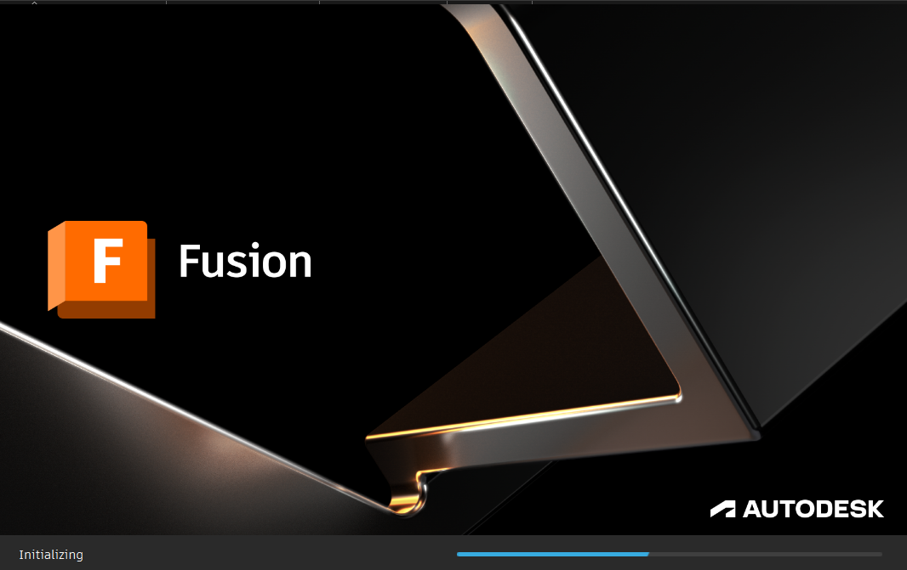
Step 2: Starting a New Design
A new untitled design file was created. The 3D grid with X, Y, and Z axes appeared, providing orientation for the solar dryer box design.
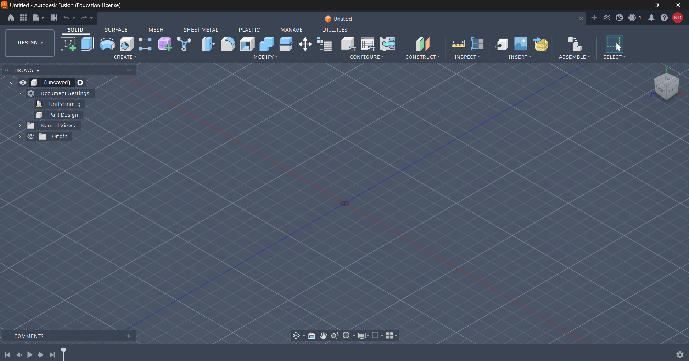
Step 3: Entering Sketch Mode
The Create Sketch option was selected. A sketch environment was opened to begin drawing the base profile of the enclosure.
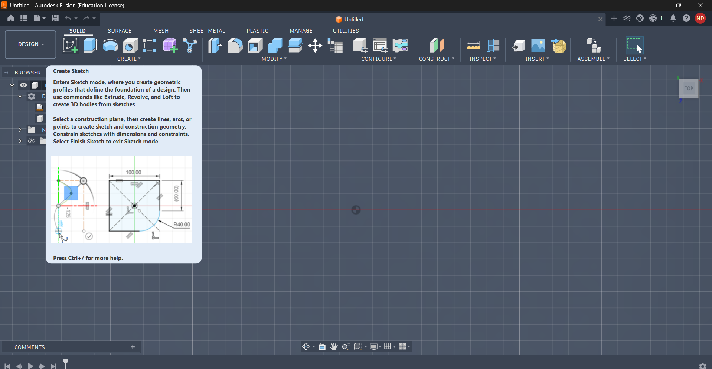
Step 4: Selecting Rectangle Tool
The 2-Point Rectangle tool was chosen to draw the base outline of the solar dryer box with precise dimensions.
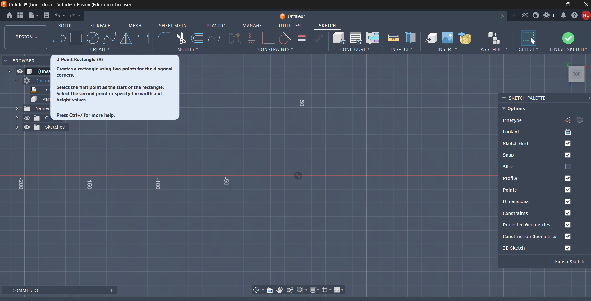
Step 5: Drawing Rectangle with Dimensions
A rectangle measuring 155 mm × 100 mm was drawn. This formed the foundation of the enclosure.
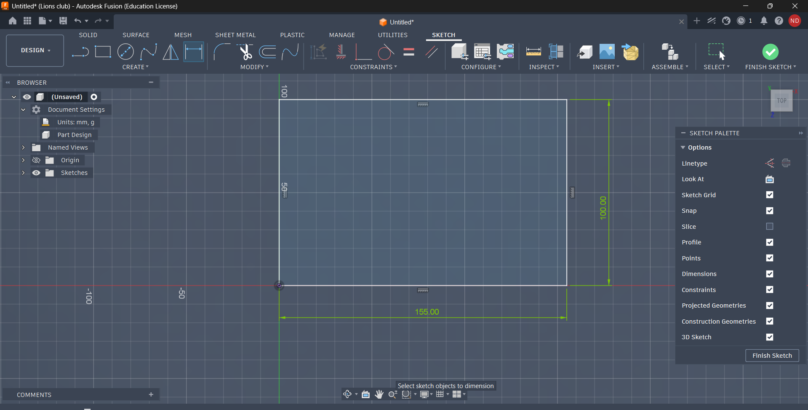
Step 6: Adding Fillets to Corners
Fillet radius of 5 mm was applied to each corner, improving both aesthetics and structural strength.
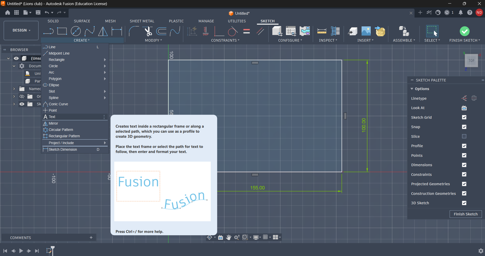
Step 7: Extruding the Base
The rectangle profile was extruded to a thickness of 3 mm, creating the bottom plate of the enclosure.
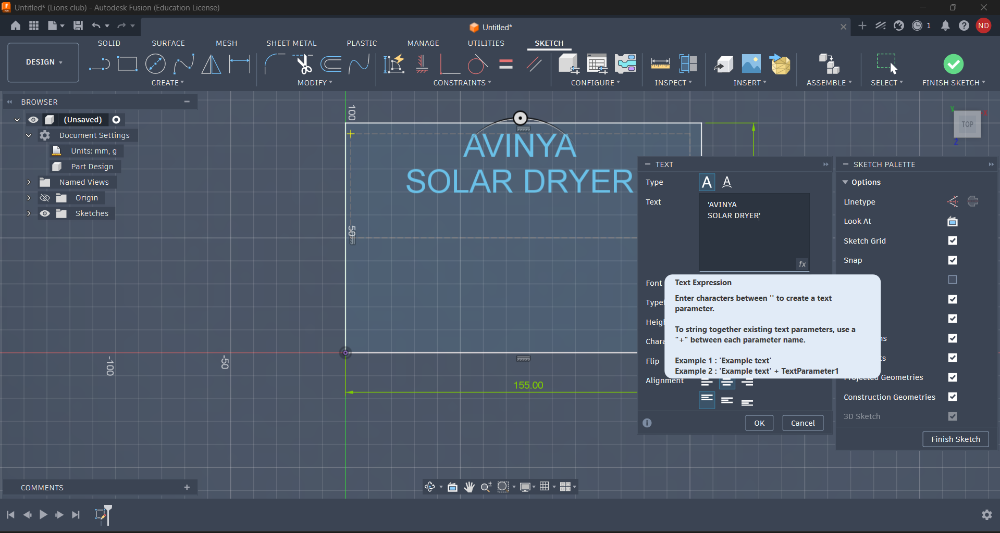
Step 8: Creating Offset Sketch
A new sketch was created on the extruded surface. An offset distance of -3 mm defined the inner wall profile.
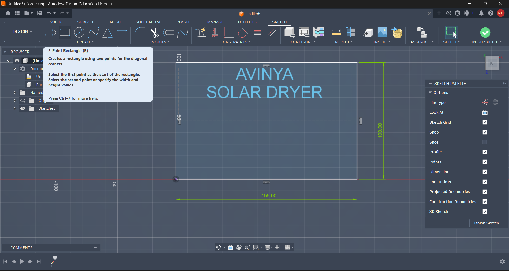
Step 9: Extruding Offset Section
The offset profile was extruded upward by 40 mm to create the side walls of the solar dryer box.

Step 10: Adding Screw Fitting Circles
Corner mounting holes were added using center diameter circles. Inner diameter was 4 mm and outer diameter was 6 mm.
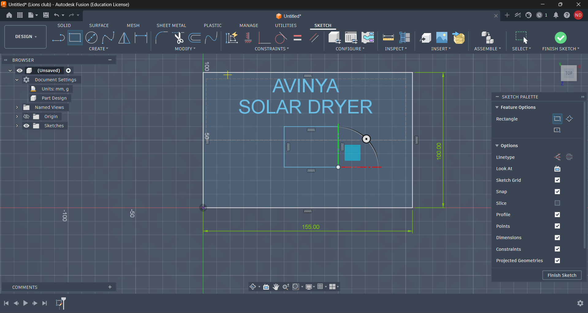
Step 11: Saving the File
The design was saved regularly to prevent data loss and preserve project progress.
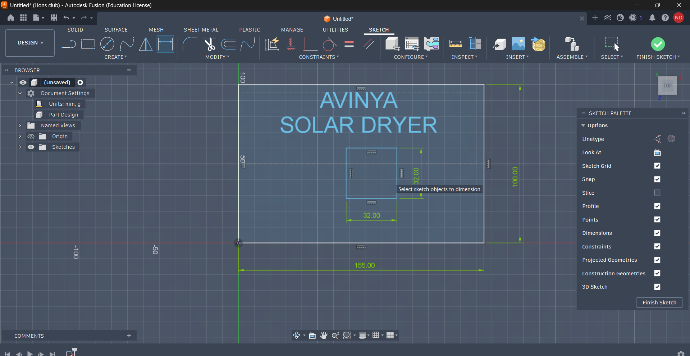
Step 12: Exporting the File
The Export function was used to prepare the design for manufacturing and sharing.
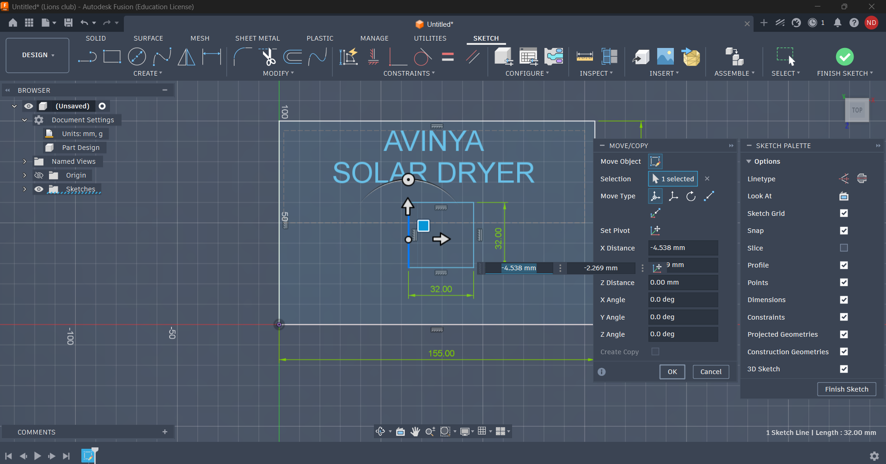
Step 13: Naming the File
The file was saved as solar dryer box.f3d using Autodesk Fusion Archive format.
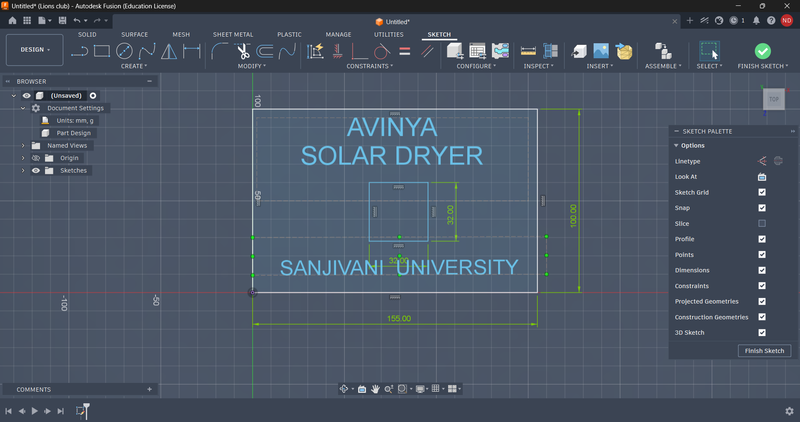
Step 14: Opening in Bamboo Printer
The exported file was imported into Bamboo Printer software. Print settings included PLA filament, 0.2 mm layer height, and 20% infill.
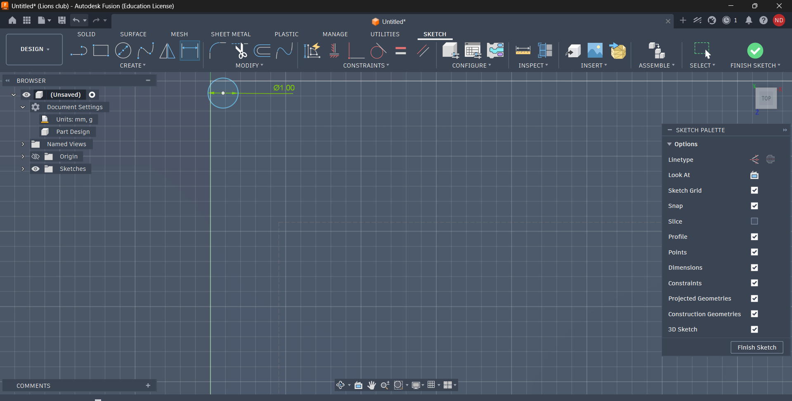
Step 15: Final Result
The solar dryer project box was successfully printed with proper dimensions, rounded corners, and screw mounting holes.
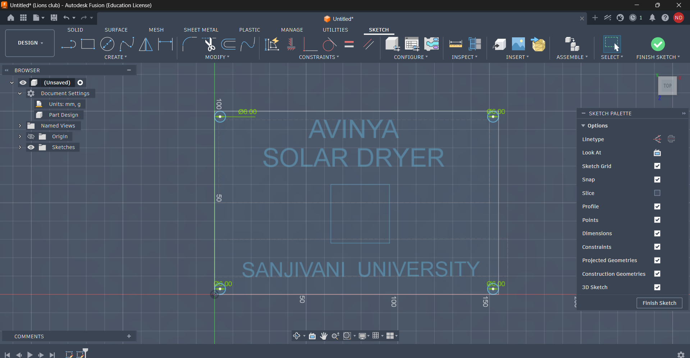
Step 16: Laser Cutting Process
After finalizing the CAD design, the profile was transferred to the laser cutting machine. Proper power and speed settings were configured to achieve clean and accurate cuts. Safety measures including protective eyewear and ventilation were followed.
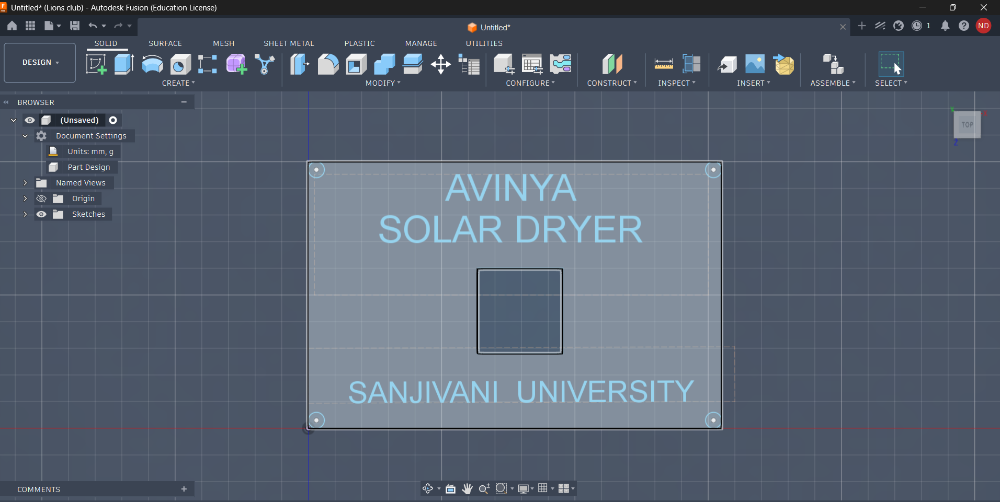
Step 17: Adding 8×8 LED Dot Matrix Display
A dedicated rectangular slot was designed at the center of the enclosure to accommodate an 8×8 LED Dot Matrix Display module. The module was carefully aligned and fitted into the slot, enabling the box to display sensor readings and system status information.
Proper clearance dimensions and mounting support ensured secure installation and visibility of the display.
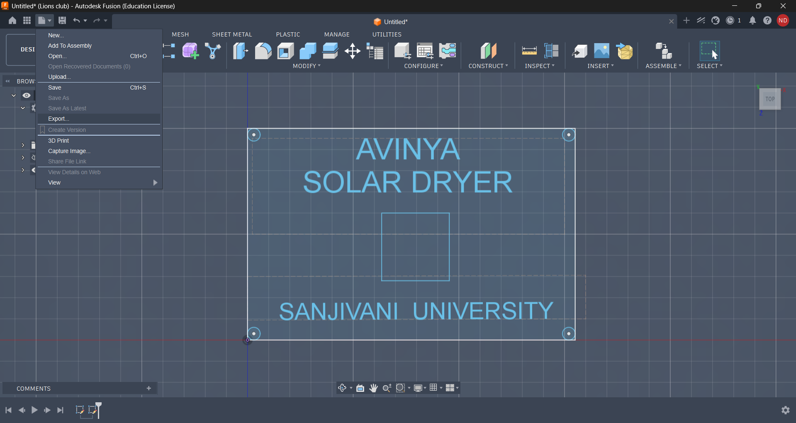
✨ Outcome
- Designed a complete Solar Dryer Project Box in Autodesk Fusion 360.
- Applied sketching, filleting, offsetting, extrusion, and mounting hole creation techniques.
- Exported and prepared the design for additive manufacturing.
- Successfully printed the enclosure using Bamboo Printer.
- Performed laser cutting operations for accurate fabrication.
- Integrated an 8×8 LED Dot Matrix Display module into the enclosure.
- Prepared the box for ESP32, DHT11, and L298N module installation.
- Created a durable and functional enclosure suitable for the Solar Dryer Project.